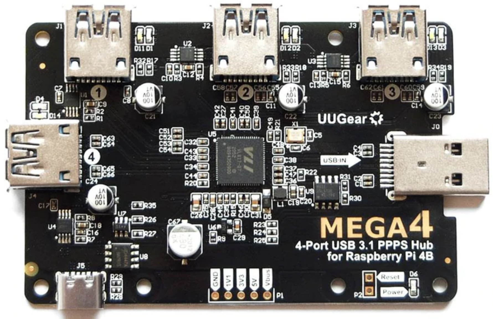

UUGear MEGA4 USB Hub
MaasPower has been tested with this device. It can power and control 4 Raspberry Pi 4’s. Other USB powered SBCs should also work but note that maximum current is 5A in total across the 4 ports.
{kind=link}
This board is designed to be mounted on top of a Raspberry Pi and controlled by it. However I used a USB extension cable with type A socket to connect it to the back of my NAS.
A suitable power supply is required to be plugged into the USB C port (J5). I recommend a 65W USB C Power Delivery device.
The usb hub control utility here works well https://github.com/mvp/uhubctl. See the github repo for details on compiling this utility.
On linux you need to enable permissions using the device’s vendor ID. The following steps will enable access:
sudo vim /etc/udev/rules.d/52-usb.rules
# add the following line
# SUBSYSTEM=="usb", ATTR{idVendor}=="2109", MODE="0666"
sudo usermod -a -G dialout $USER
sudo udevadm trigger --attr-match=subsystem=usb
The commands you will need are as follows:
# turn on port 3
uhubctl -a 1 -p 3
# turn off port 3
uhubctl -a 0 -p 3
# get status for port 3
uhubctl -p 3
# for query use this regex for 'on'
# .* power
# for query use this regex for 'off'
# .* off